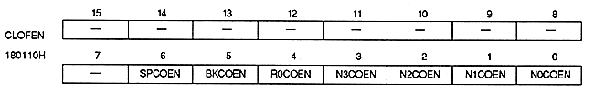

Color offset enable bit
| N0COEN | 180110H | Bit 0 | For NBG0 (or RBG1 For use) |
| N1COEN | 180110H | Bit 1 | For NBG1 (or EXBG) |
| N2COEN | 180110H | Bit 2 | For NBG2 |
| N3COEN | 180110H | Bit 3 | For NBG3 |
| R0COEN | 180110H | Bit 4 | For RBG0 |
| BKCOEN | 180110H | Bit 5 | For BACK |
| SPCOEN | 180110H | Bit 6 | For Sprite |
| xxCOEN | Process |
| 0 | Do not use color offset function |
| 1 | Use color offset function |
When using the color calculation function, specify the color offset enable bit on the screen on the top image side.